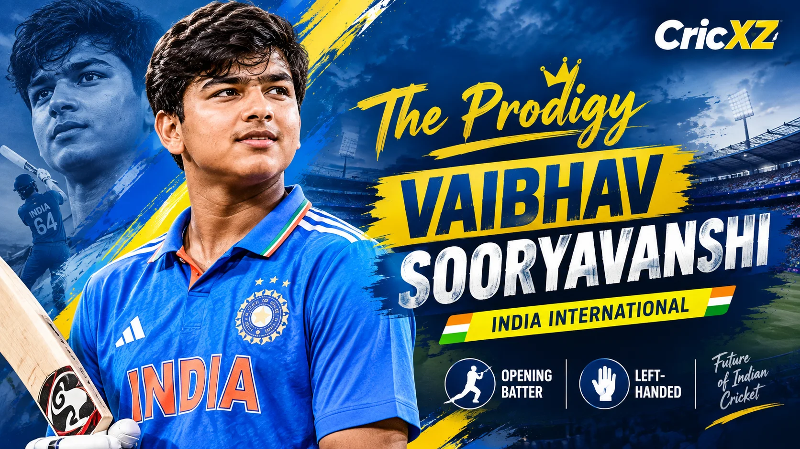

First-Class
- Matches
- 12
- Batting innings
- 20
- Not outs
- 1
- Runs
- 680
- Highest score
- 113
- Batting average
- 35.78
- Strike rate
- 85.50
- Hundreds
- 1
- Fifties
- 3

Vaibhav Sooryavanshi is a 15-year-old cricket prodigy who has taken the cricketing world by storm. As of October 2026, he is the youngest player to debut in the IPL, the youngest to score an IPL century, and the youngest to represent the senior India T20I team.
Statistics as of: 2 October 2026
Primary career statistics source: BCCI / IPL
Vaibhav Sooryavanshi's meteoric rise through the Indian cricket system has been compressed into an unusually short timeline. Making his First-Class debut for Bihar at the age of just 12 years and 284 days, he quickly demonstrated that age is merely a number when matched with generational talent.
His T20 record is particularly staggering. Across IPL, domestic T20s, and his early senior international appearances, Vaibhav has accumulated 1,450 runs at an astronomical strike rate of 215.20. In the 2026 IPL season, playing for the Rajasthan Royals, he smashed a world-record 72 sixes in a single T20 tournament, securing the Orange Cap with 776 runs.
He broke the internet in April 2025 when he became the youngest centurion in IPL history (101* off 38 balls), which also stood as the fastest IPL century by an Indian batter (35 balls). Recently, he was a key contributor in the Asian Games 2026, bringing his fearless striking to the global stage.
January 2024 (Age 12)
For Bihar against Mumbai in the Ranji Trophy.
April 2025 (Age 14)
For Rajasthan Royals, becoming the youngest player in IPL history.
4 July 2026 (Age 15)
For India against England at Emirates Old Trafford, Manchester.
As of October 2026, Vaibhav Sooryavanshi is the most talked-about teenager in world cricket. He is currently representing the senior Indian men's team in the Asian Games 2026 T20 tournament in Japan, where his aggressive powerplay starts have been crucial for India.
Vaibhav became the youngest batter to score a half-century in international cricket (50 off 19 balls) against Zimbabwe in July 2026. He brings the same explosive approach to the Asian Games squad.
He was named the Player of the Tournament at the 2026 ICC Under-19 World Cup, famously smashing 175 off just 80 balls in the final against England U19 to secure the title for India.
In a testament to his maturity, Vaibhav recently stood in as captain for the East Zone during the 2026–27 Duleep Trophy after an injury to Ishan Kishan, becoming the youngest captain in the tournament's history.
Made his senior T20I debut for India at 15 years and 97 days against England.
Won the Orange Cap in IPL 2026 with 776 runs, hitting a world-record 72 sixes in a single T20 tournament.
Player of the Tournament at the 2026 U19 World Cup, scoring 175 off 80 balls in the Final.
Scored a 35-ball century against Gujarat Titans at the age of 14, the fastest by any Indian in IPL history.
Debuted in First-Class cricket for Bihar at the incredible age of 12 years and 284 days.
Statistics as of: 2 October 2026. Domestic, IPL, and T20 aggregate figures are sourced from the BCCI and IPL baseline records.